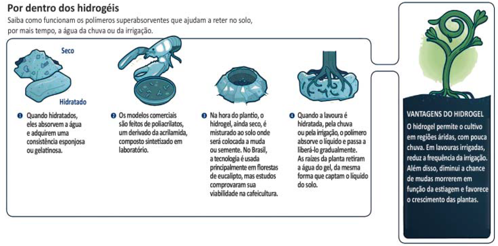

Hidrogéis são materiais poliméricos em forma de pó, grão ou fragmentos semelhantes a pedaços de plástico maleável. Surgiram nos anos 1950, nos Estados Unidos da América e, desde então, têm sido usados na agricultura. Os hidrogéis ou polímeros hidrorretentores podem ser criados a partir de polímeros naturais ou sintetizados em laboratório. Os estudos com polímeros naturais mostram que eles são viáveis ecologicamente, mas ainda não comercialmente.
No infográfico abaixo, explica-se como os polímeros naturais superabsorventes, quando misturados ao solo, podem viabilizar culturas agrícolas em regiões áridas.
Disponível em: http://Wwww.revistapesquisa.fapesp.br. Acesso em: 18 jul. 2017 (adaptado).
A partir das informações apresentadas, assinale a opção correta.